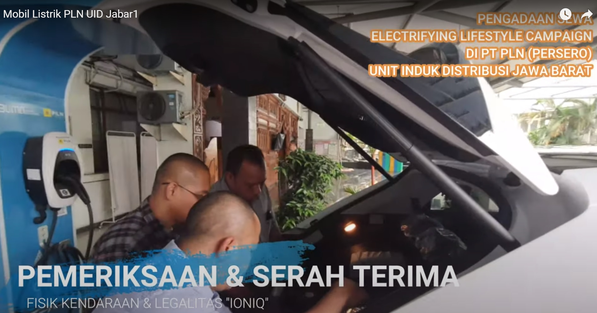
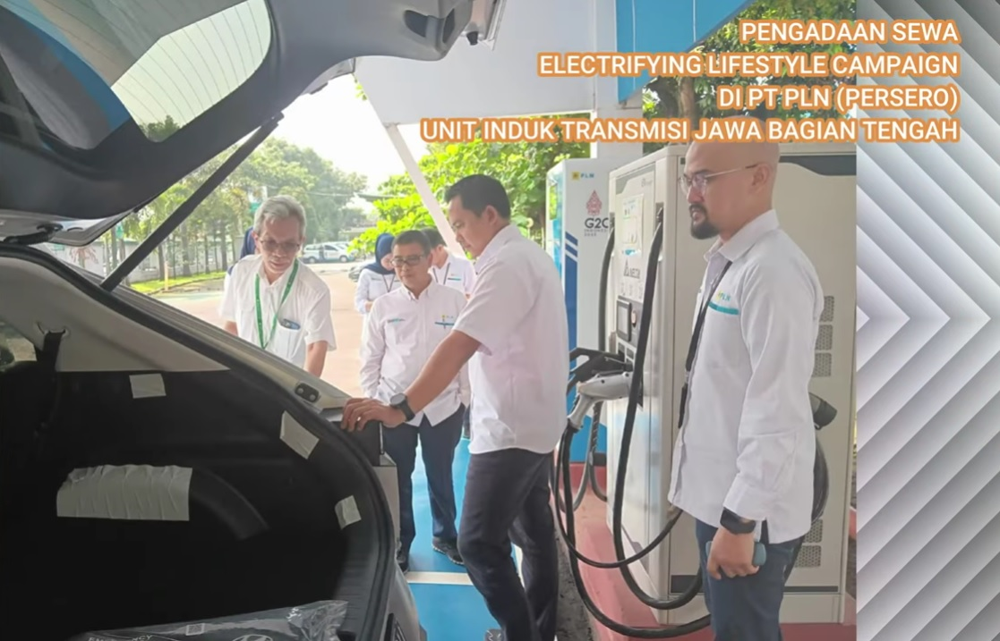

DENGAN APLIKASI DIGITAL

Pengadaan Sewa Mobil Listrik PT PLN (Persero) Unit Induk Distribusi Jawa Barat

Pengadaan Sewa Electrifying Livestyle Campaign di PT PLN (Persero) UIT JBT

#
#
- PT PLN (Persero) UID Lampung
- PT PLN (Persero) UID Banten
- Institute Teknologi PLN
- PT PLN Gas dan Geothermal
- PT PLN Enjiniring
- PT PLN (Persero) UPDL Bogo
- PT PLN (Persero) UPMK I Jakarta
- PT PLN (Persero) UIP JBB
Pengalaman Pemborongan Pekerjaan Sewa Sarana Transportasi PT UJPK (termasuk sewa Electric Vehicle/Mobil Listrik) antara lain:
Penyewaan kendaraan dan pengemudi adalah bentuk usaha baru yang dikelola secara besar-besaran yang membutuhkan tenaga-tenaga handal dalam mengemudikan kendaraan demi kenyamanan para pengguna jasa transportasi. Kendaraan-kendaraan yang disewakan adalah kendaraan yang cukup memberikan kenyamanan sesuai kriteria dan keinginan pengguna. Pelayanan prima yang kami usung sebagai salah satu motto kami memberikan kepercayaan yang cukup baik dari pengguna, sehingga PT UJPK mengembangkan usaha tersebut di unit- unit PT PLN (Persero) dan perusahaan lainnya.